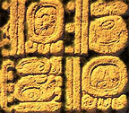

Mesoamerican Links
An overview of sites pertaining to Precolumbian and Mesoamerican topics.
Ancient American Civilizations: Mesoamerica
Thomas Burglin's Mesoamerican Archaeology WWW
ArchNet WWW Virtual Library: Archaeology
Precolumbian Archaeology Links
The El Cayo Archaeological Project
Archaeology of the Feathered Serpent Pyramid, Teotihuacan
Museo Carlos Pellicer, Tabasco, Mexico
Mesoamerican Urban Landscape
National Park Service: Tools for Teaching Archaeology
Mesoamerican Image Files and Software
Maya & Mesoamerican Links
GB's On-Line Mesoamerica
Maya Links
Project related sites specific to the area of Maya and Mesoamerican epigraphic studies.
Maya Epigraphic Database Project
Maya Epigraphic Database Project Handbook
Copan Acropolis Project
Foundation for the Advancement of Mesoamerican Studies
Dumbarton Oaks Research Library and Collection
Peabody Museum of Archaeology and Ethnology
The Maya Astronomy Home Page
Maya Adventure: Science Museum of Minnesota
Foundation for Latin American Anthropological Research
MayaBase Rel. 5.1
Maya Links
Starry Night Deluxe
The Aztec Calendar
Virtual Palenque
Lords of the Earth
Maya Videodisk Middle School Curriculum
Digital Photography of the 21st century
University of Arizona Library Archaeology Links